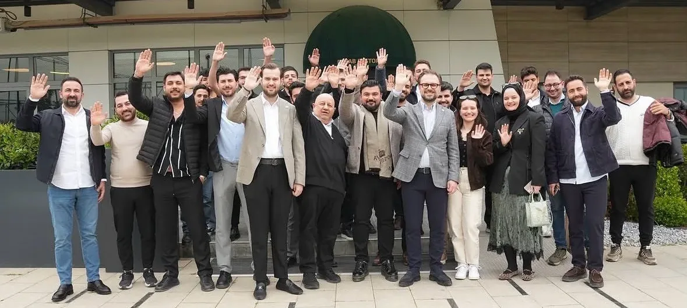
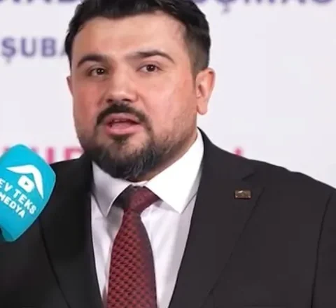
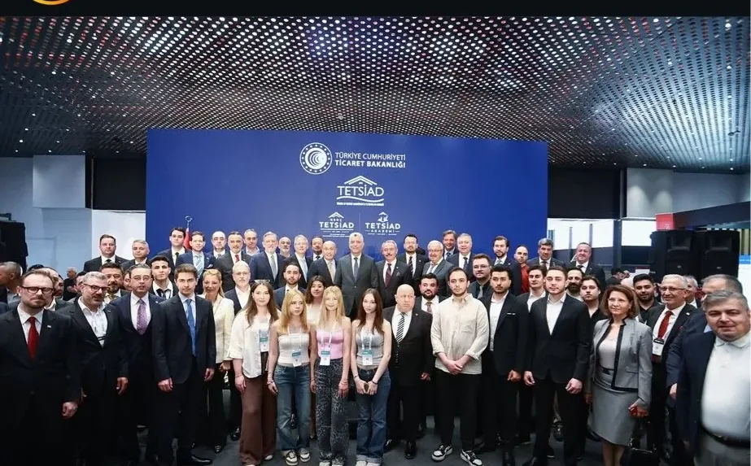

Türkiye ev tekstilinin genç iş insanları platformu.
Türkiye ev tekstili sektörü, yüzyıllık bir dokuma geleneğinin üzerinde yükseliyor. Biz bu geleneği geleceğe taşıyacak nesil olarak bir araya geldik.
Genç TETSİAD; üretimi, tasarımı ve ihracatı birleştiren genç iş insanlarının platformudur. Rekabeti değil, dayanışmayı; kâr yarışını değil, ortak büyümeyi seçiyoruz.
Avrupa'nın yeşil dönüşümünü tehdit değil fırsat olarak okuyoruz. Sürdürülebilir üretim standartlarını dünyadan önce benimsemek, bizi öne çıkaracak.
Mentorluk, kurs ve etkinliklerle birbirimizden öğreniyoruz. Sektördeki her genç isim hem öğrenci hem öğretmendir.
Değişim gençlerle olacak. Biz, o değişimin kendisiyiz.

Genç TETSİAD, sektörün geleceğini bugünden örmeye başlayan bir atölyedir. Üretirken öğrenmek, paylaşırken büyümek istiyoruz.
Ev tekstili sektörümüz onlarca yıldır dünya pazarında güçlü bir yer tutmaktadır. Ancak bu güç, artık yalnızca üretim kapasitesiyle ölçülmüyor.
Genç TETSİAD olarak tam da bu dönüşümün merkezinde yer almak istiyoruz. Türkiye'nin dokuma geleneğini, genç kuşağın vizyonuyla birleştirdiğimizde ortaya çok güçlü bir sinerji çıkıyor.
Bu platform, yalnızca bir uygulama değil; sektörün geleceğine yapılan somut bir yatırım.
Yıllık liderlik ve temsil programı. Seçilen üyeler ulusal ve uluslararası platformlarda sektörü temsil eder.
Uluslararası fuar ve konferanslarda Türkiye ev tekstilini temsil eden genç büyükelçiler programı.
Üretim, tasarım ve ihracat alanında olağanüstü başarı gösteren genç üyelere verilen prestij ödülü ve burs.
AB ve global tekstil trendlerini takip eden araştırma ve rapor programı.

Türkiye'nin dört bir yanındaki üyelere ulaşın. Firma, şehir ve sektör bilgisiyle aranabilir dizin, QR dijital kartvizit.
Fabrika ziyaretleri, fuar hazırlıkları, komite toplantıları. Kontenjanı görün, tek dokunuşla yerinizi ayırtın.
İhracattan sürdürülebilir tedarik zincirine, marka inşasından AB direktiflerine — tüm üyelere ücretsiz.
Sektörün deneyimli isimleriyle eşleşin. Her genç isim hem öğrenci hem öğretmendir.
Üyelerin kaleminden sektör yazıları. Dernek yönetiminin editoryal incelemesinden geçerek yayımlanır.
Dernekten gelen her haber anında telefonunuzda.
Uygulama üzerinden başvurunuzu oluşturursunuz. Firma, şehir ve sektör bilgileriniz alınır.
Başvurunuz dernek komisyonu tarafından incelenir.
Onaylandığında üye kodunuz ve dijital kartvizitiniz otomatik tanımlanır.